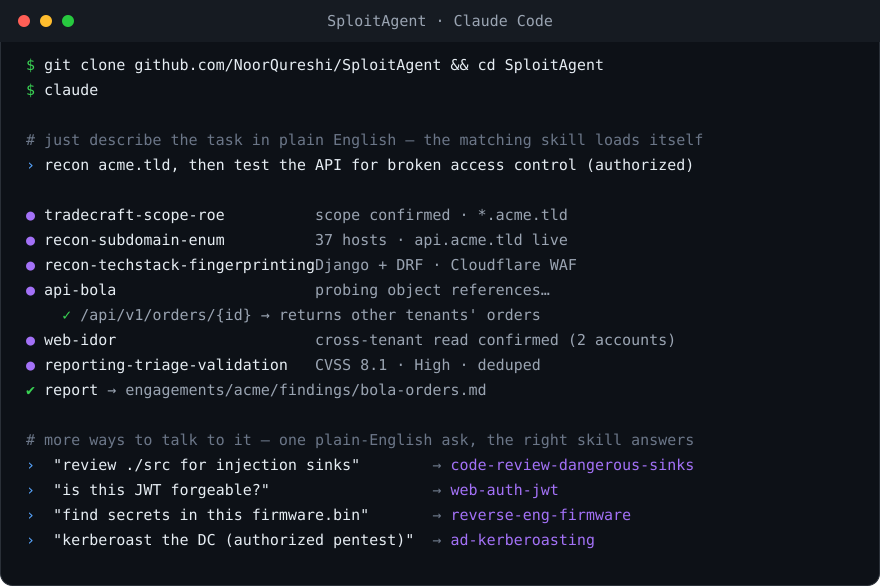

Think of it as a binder of 127 short "how to do this one technique" pages your agent flips to when it needs one. It's not a scanner and not a framework — just the know-how, as plain Markdown. No runtime, no build step, no lock-in.
# A few words you'll see
| Term | Plain meaning |
|---|---|
| skill | one Markdown file that teaches one technique |
| workspace | a folder for one target — holds your scope, notes, and findings |
| scope | the targets you're allowed to test — the hard boundary the agent won't cross |
| lead | one thing worth trying (e.g. "the login's JWT"); the agent works one at a time |
| console | the optional local web page (sploit watch) that shows what the agent is doing |
# Quick start
Install once, then scaffold a per-target workspace anywhere — the folder gets the skills wired in, so any agent opened there can use them.
git clone https://github.com/NoorQureshi/SploitAgent && cd SploitAgent ./sploit install # skills everywhere + `sploit` on PATH sploit new acme.com ~/work/acme # workspace anywhere you like cd ~/work/acme && claude # or: codex · gemini
Then say: "Start an authorized assessment of acme.com. Confirm scope, then recon." Full setup →
# Ask it things like…
You don't learn commands — you describe the task, and the matching skill loads itself.
| You say… | It loads |
|---|---|
| "recon acme.com and map the attack surface" | recon-* |
| "test this API for IDOR / BOLA (I'm authorized)" | api-bola, web-idor |
| "is this login's JWT forgeable?" | web-auth-jwt |
| "review ./src for injection sinks" | code-review-* |
| "I got a shell — what now?" | privesc-enumeration |
| "turn this finding into a report" | reporting-* |
| "write a Sigma rule to detect this" | defense-detection-sigma |
# Explore
Pick the page that matches what you want to do.
🚀 Getting Started
Install it and use it with Claude Code, Codex, Gemini, or a local model in under a minute.
How to use it →💬 How it works
How you talk to the skills, what the agent outputs, how it pivots from one skill to the next, and what an engagement produces.
See it end to end →🧩 Skills
All 127 skills across 20 domains — what each covers, how one is structured, and the full catalog.
Explore the library →🛡️ Authorized Use
The one rule that governs everything: SploitAgent only acts inside a confirmed authorization envelope.
Read the rule →🤝 Contribute
A contribution is a single Markdown file — no code. See what's wanted and how to add it.
Add a skill →📖 Catalog & Coverage
The browsable index of every skill, and how the library maps to OWASP, MITRE ATT&CK, and CWE.
Search skills → · Coverage →# How an agent works a target
Every engagement follows the same loop. Each stage routes to the skills that fit it.
1. Scope confirm authorization; record scope.txt → tradecraft-scope-roe 2. Recon map the attack surface → recon-* 3. Attack route by domain (web / api / cloud / ad / …) → web-*, api-*, cloud-*, … 4. Foothold drive a weakness to proven impact → exploit-chaining 5. Escalate privilege escalation and lateral movement → privesc-*, ad-*, network-* 6. Report findings with severity and evidence → reporting-* 7. Defend convert findings into detections → defense-*